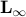
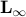

A Regularity Result for the Singular Values of a Transfer Matrix and a Quadratically Convergent Algorithm for Computing its L_infinity-norm
S. Boyd and V. Balakrishnan
Systems and Control Letters, 15(1):1-7, July 1990. Conference paper appeared in Proceedings IEEE Conference on Decision and Control, pp.954-955, December 1989.
SCL paper: sv_of_tf.pdf
Conference paper: sv_of_tf_conf.pdf
The  th singular value of a transfer matrix need
not be a differentiable function of frequency where its
multiplicity is greater than one. We show that near a local maximum,
however, the largest singular value has a Lipschitz second
derivative, but need not have a third derivative. Using
this regularity
result, we present a quadratically convergent algorithm for computing
the -norm of a transfer matrix.
th singular value of a transfer matrix need
not be a differentiable function of frequency where its
multiplicity is greater than one. We show that near a local maximum,
however, the largest singular value has a Lipschitz second
derivative, but need not have a third derivative. Using
this regularity
result, we present a quadratically convergent algorithm for computing
the -norm of a transfer matrix.